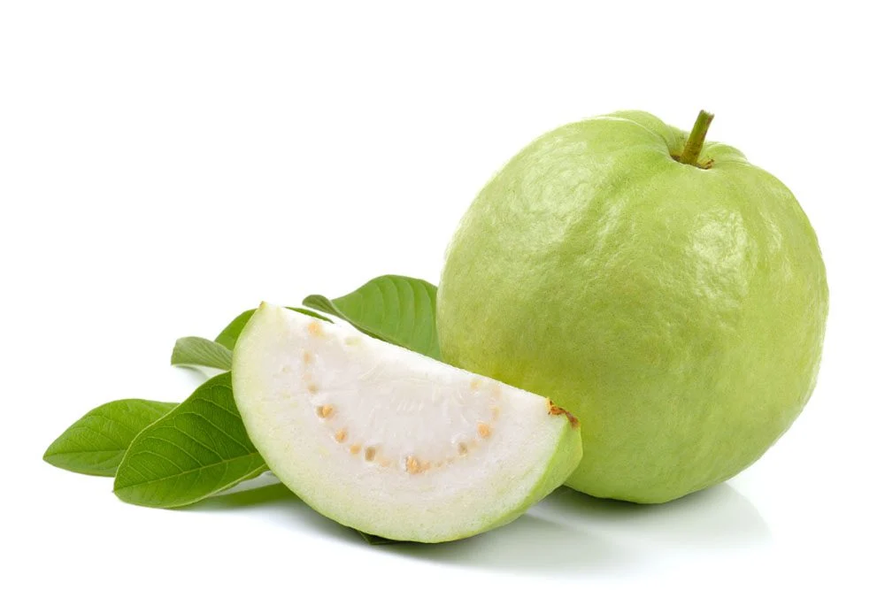
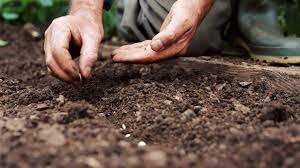
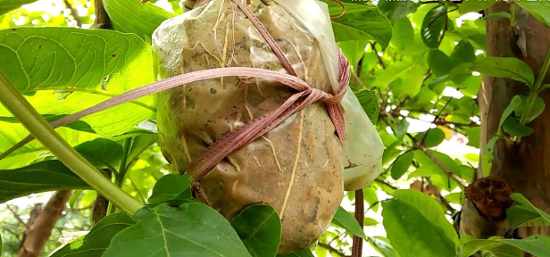
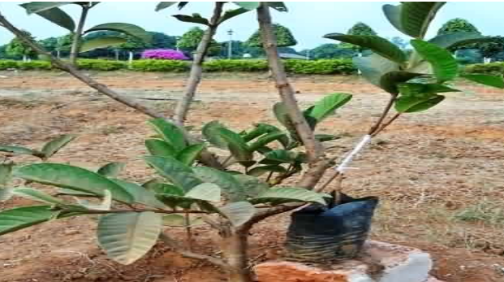
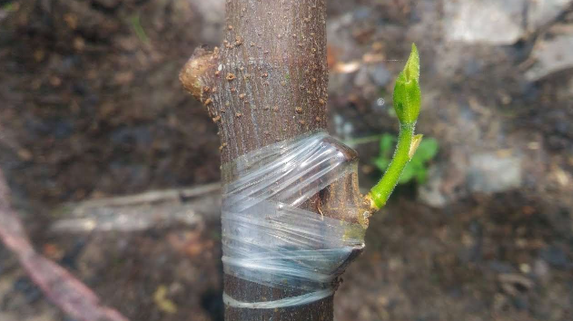

GENERAL INFORMATION
Common but important commercial fruit crop of India. It is native to Central America. It can grow in tropical
and sub-tropical areas. It is rich source of Vitamin C and Pectin along with Calcium and Phosphorus. It is the
fourth most important crop after Mango, Banana and Citrus. It can be grown all over India. Bihar, Uttar Pradesh,
Maharashtra, Karnataka, Orissa, WB, AP and Tamilnadu are the major stated growing guava. Also it can be
successfully grown throughout Punjab, Haryana and Uttar Pradesh. In Punjab, it occupies an area of 8022ha with
annual production of 160463MT.

Temperature
15-30°C
Rainfall
100cm
Sowing Temperature
15-20°C
25-30°C
Harvesting Temperature
20-25°C
18-22°
SOIL
It is a hardy crop. And grows wells in all type of soil from poor, alkaline and ill drained soil. It can
1
grow in soil having pH ranging from 6.5 to 7.5. It gives best results when grown under deep, well drained,
sandy
loam to clay loam soil.
POPULAR VARIETIES WITH THEIR YIELD
Allahbad Safeda:
Dwarf variety with round crown and spreading branches. Fruit is
smooth, round and flesh is
of
white color with pleasant flavor. TSS ranges from 10-12%. Gives average yield of 145 kg per Tree.
Arka Amulya:
Dwarf variety with compact, round crown with dense foliage. Fruit is of
large size, smooth,
round
and having white flesh. TSS ranges from 9.3 to 10.1%. Gives average yield of 144 kg per Tree.
Shweta:
It has creamy white flesh. The fruit contains 10.5-11.0% sucrose content. It
gives an average yield
of
151kg per tree.
Nigiski:
It gives an average yield of 80kg per tree.
Allahabad Surkha: Seedless variety. Large fruit with uniform pink color flesh.
Apple guava:
Pink colored medium size fruits. Fruits are having sweet taste with
good keeping quality.
Chittidar:
Popular variety of Uttar Pradesh. Fruits are similar to Allahbad Safeda
variety except these
fruits
having red dots on skin. Its TSS content is higher than Allahbad Safeda and L 49 variety.
LAND PREPARATION
Do ploughing, cross ploughing of land and then levelled the land. Prepare land in such way that water
stagnation
should not occurred in field.
SOWING
Time of sowing
February-March or August-September month is optimum time for planting of Guava.
Spacing
For planting use spacing of 6x5 m. Use of planting distance of 7m, then in square system, 132 plants can
be accommodating in one acre.
Sowing Depth
Roots should be sown at the depth of 25 cm
METHOD OF SOWING
Direct sowing :

Transplanting method :

Rootstock raising :

Budding :

PROPAGATION
Plants are propagated by budding or Air layering. Sardar variety seeds are tolerant to wilt and can
be used for raising rootstock. Extract seed from ripen fruit and sow them in raise bed in August-March. Make
raised beds of 2mx1m. When seedling becomes six months old they are ready for transplantation. Transplanted
seedling when attain diameter of 1-1.2cm and height of 15cm they are ready for budding process. May and June
months are best for budding process. Freshly cut, angular bud wood from current season’s growth is used for
budding purpose
PRUNING AND TRAINING
Training and Pruning is necessary to provide stronger frame work to guava tree. Stronger frame
work helps to
support high yield. To maintain the productivity of trees, light pruning at time of first
harvesting is
necessary. Regularly remove dead and diseased infected branches. Modified leader system of
training is
followed.
Flowers in guava are borne on current seasons growth so carry out light annual pruning and
remove upto 10cm
tip,
it will encourage new shoots after harvestig FERTILIZER
Fertilizer Requirement (kg/acre)
TABLE
| Age of crop (Year) |
Well decomposed cow dung (in kg) |
Urea (in gm) |
SSP (in gm) |
MOP (in gm) |
| First to three year |
10-20 |
150-200 |
500-1500 |
100-400 |
| Four to six year |
25-40 |
300-600 |
1500-2000 |
600-1000 |
| Seven to ten year |
40-50 |
750-1000 |
2000-2500 |
1100-1500 |
| Ten year and above |
50 |
1000 |
2500 |
1500 |
When crop is of 1-3 year old, apply well composed cow dung@10-25 kg per tree along with
Urea@155-200 gm,
SSP@500-1600 gm and MOP@100-400 gm per Tree. For 4-6year old crop, apply cowdung@25-40 kg,
Urea@300-600 gm,
SSP@1500-2000 gm, MOP@600 gm-1000 gm per tree. When crop become 7-10 year old, apply
Cowdung@40-50 kg,
Urea@750-1000 gm, SSP@2000-2500 gm and MOP@1100-1500 gm per Tree.
When crop age is above 10 year, apply Cowdung@50 kg per tree, Urea@1000 gm, SSP@2500 gm and
MOP@1500 gm per
Tree.
Apply half of dose of Urea, SSP and MOP and full dose of cowdung, in May-June month and
remaining half dose
in
September - October.
WEED CONTROL
Weed control is necessary for good crop growth and yield. To keep check on weed growth,
apply Gramoxone
6ml/litre of water in March, July and September month. Apply Glyphosate@ 1.6Ltr/acre as
post-emergence when
weed
growth is active (before weeds flower and attained height of 15-20cm). 200Ltr of water
is sufficient to
spray
one acre land.
IRRIGATION
After planting, irrigate crop immediately, then irrigate on third day, afterwards
irrigate depending upon
soil
type and climate. Irrigation is not required to well establish orchards. Young
plantation required
irrigation at
weekly interval in summer month and 2-3 irrigation during winter month. Avoid flood
irrigation during
flowering
stage as it leads to excessive flower
4
drop.
PLANT PROTECTION
Fruit Fly:
It is serious pest of guava. Females lay eggs below epidermis of
young fruits. Later on maggots
feed
on pulp afterward fruits starts rotting and get drop.
If orchards are having history of fruit fly, avoid taking rainy season crop. Do
harvesting at right time.
Avoid
delay in harvesting. Remove and destroyed infested branches, fruits away from
field. Take spray of
Fenvalerate@80ml in 150Ltr of water at weekly intervals on fruit ripening.
Harvest should be done after
third
day of spraying.
Mealy Bug:
They suck sap from different plant parts and thus weaken plant. If
infestations of sucking pests
like
Mealy bug is observed then to control spray with Chlorpyriphos 50EC @
300ml/100Ltr of water.
Guava Shoot Borer: It is a serious pest of nursery. Infested shoots get dry up.
If infestation is observed, take spray of Chlorpyriphos@500ml or
Quinalphos@400ml in 100Litres of water per
acre.
5
Aphid:
Serious and common pest of Guava. Adult and nymphs, both suck the sap
thus weaken the plant. In
severe
infestation, they cause curling and deformation of young leaves. They secrete
honey dew like substance and
Sooty, black mould is developed on affected parts.
If infestation is observed to control takes spray of Dimethoate@20ml or Methyl
Demeton@ 20ml per 10Ltr water
on
new flush.
Wilt:
Serious disease of Guava crop. Yellowing, wilting of leaves along with
defoliation are symptoms of
wilt
infestation.
Keep field well drained; avoid water logging condition in field. Remove and
destroyed infected plants away
from
field. Drench nearby soil with Copper oxychloride@25gm or Carbendazim@
20gm/10Ltr of water
Anthracnose or Dieback:
Dark brown or black spots are observed on shoots. On
fruits also small, raise, dark
spots are observed. Fruits rot completely within 2 to 3days after infection.
Keep field clean, destroyed infected plant parts, fruits also avoid water
logging condition in soil. After
pruning take spray of Captan@300gm in 100Ltr water. At fruit set repeat the
spray of Captan and continue
till
fruits get mature with interval of 10-15days. If infestation observed in field
take spray of Copper
oxychloride@30gm/10Ltr on infected trees.
6
HARVESTING
Within 2-3years after planting comes to bearing. Harvesting should be done
when fruits get mature. On
maturity,
fruits changes color from dark green to greenish yellow. Do harvesting at
proper time and avoid
over-ripening of
fruits as it deteriorates quality and test.
POST-HARVEST
After harvesting, carry out cleaning, grading and packing operations. As
gauva is perishable fruits, it
should
be marketed immediately after harvest. For packing use CFB, corrugated
fibre boxes or bamboo baskets of
different size.
TABLE
| heading1 |
heading2 |
| a |
b |
| C |
d |